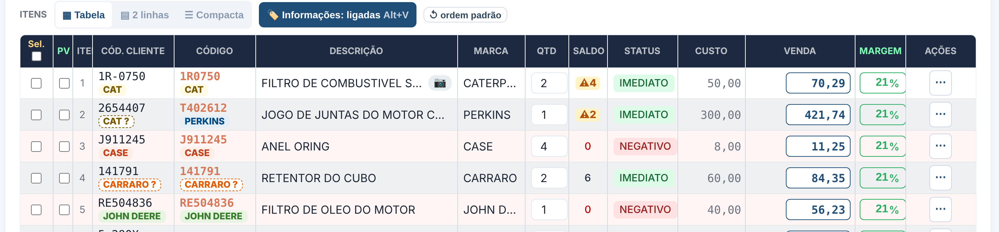
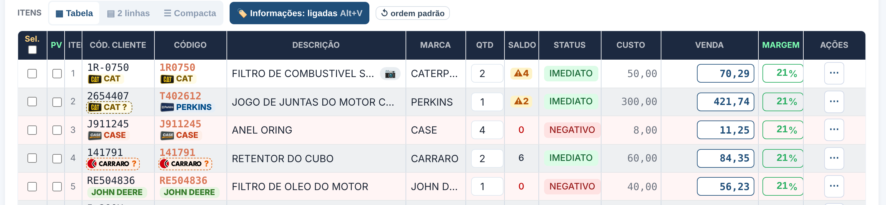
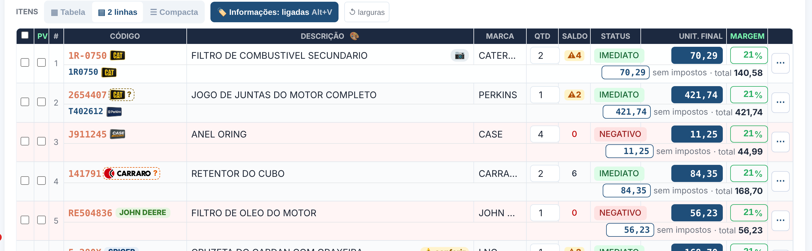

🏷️ Etiqueta da linha — texto × logo
Marcas sem logo guardado no PF (John Deere, Spicer, Volvo, New Holland…) continuam em texto. Tracejado com "?" = código só com números (linha incerta). As colunas de código crescem até caber a etiqueta.
A · Só texto (como está hoje, CATERPILLAR virou CAT)

B · Só o logo — mais limpo, mas logo pequeno fica difícil de ler (Perkins, Case)
C · Logo + nome — dá pra reconhecer e ler

D · 2 linhas com o logo (ao lado do código)
